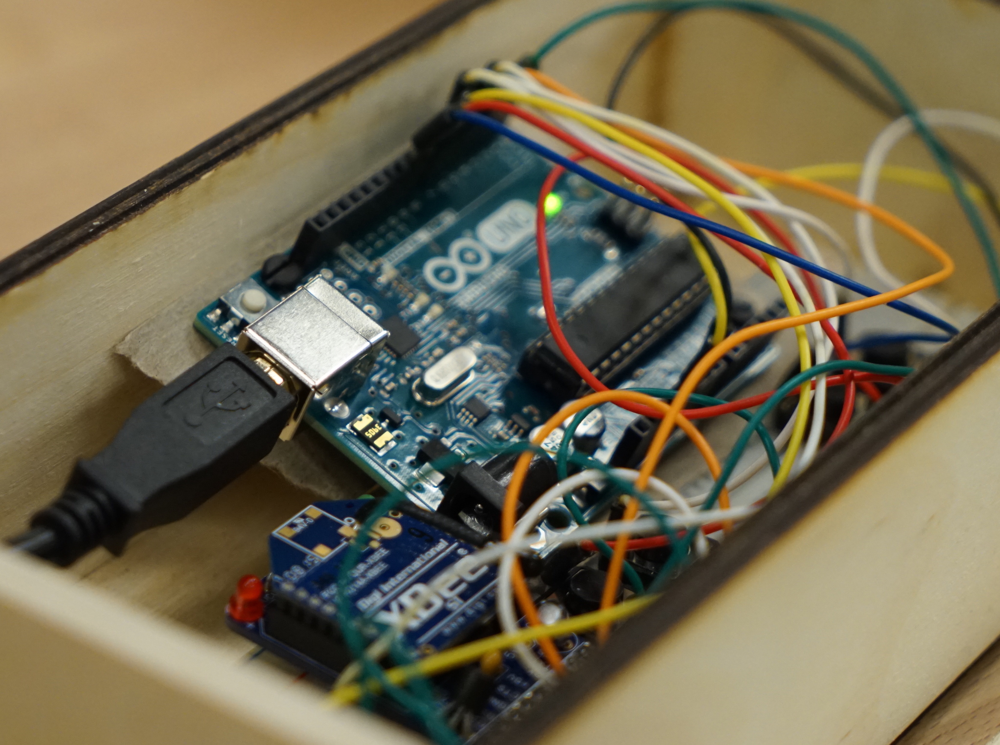

Electronics x Art

Ar(t)duino?
This first project is called Ambient Weather: Sonifying Seattle. I composed an ambient experience controlled by weather data. I used the following tools to do so: Arduino, Processing, Ableton Live, MQTT, Open Weather API.
Have a listen.
This next one was made for finger-free music making!